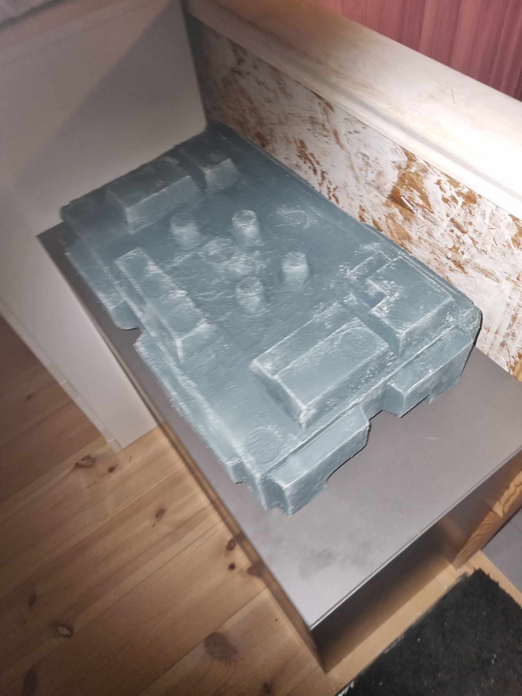
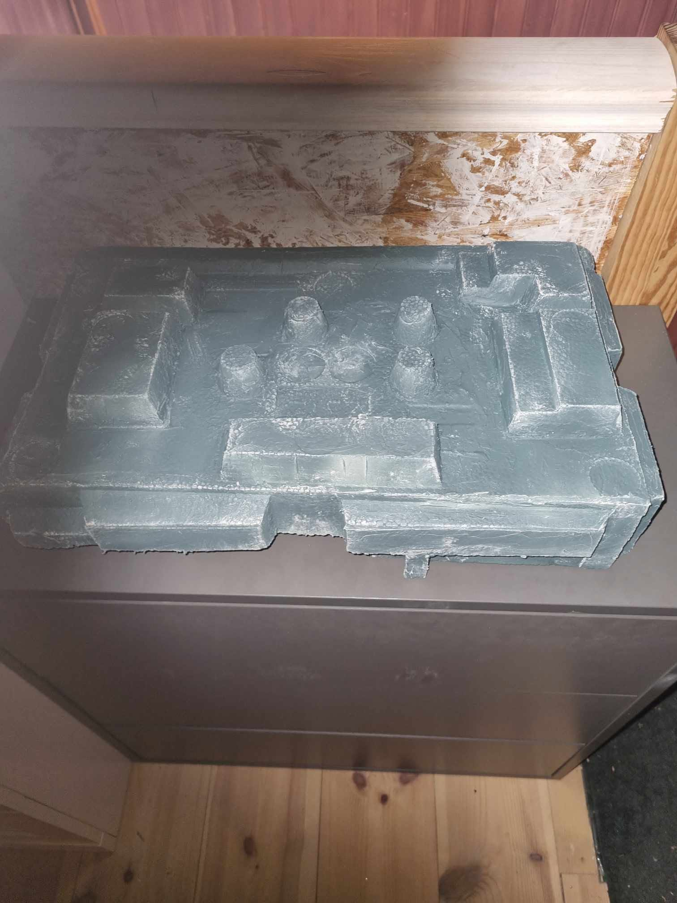
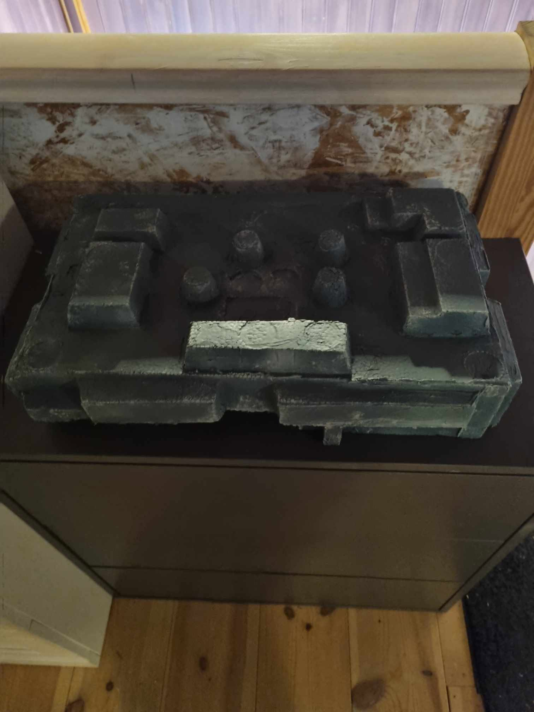
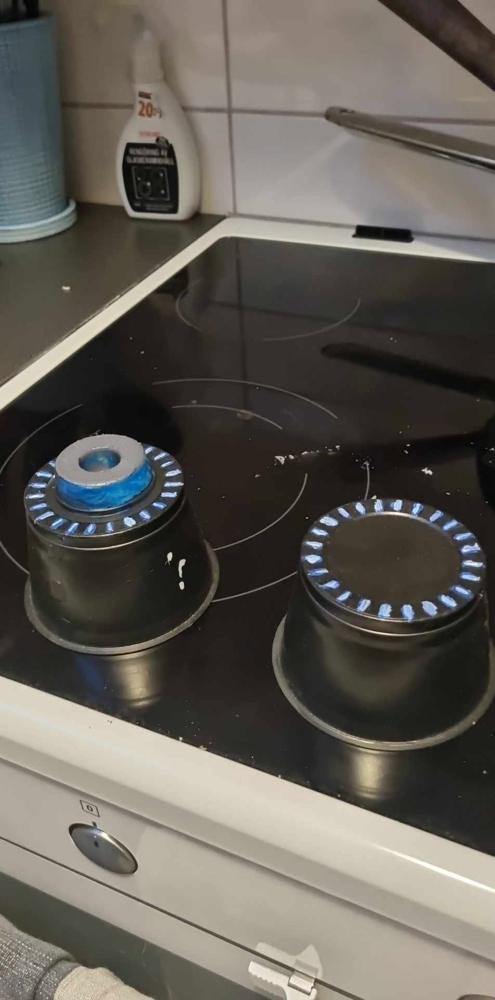
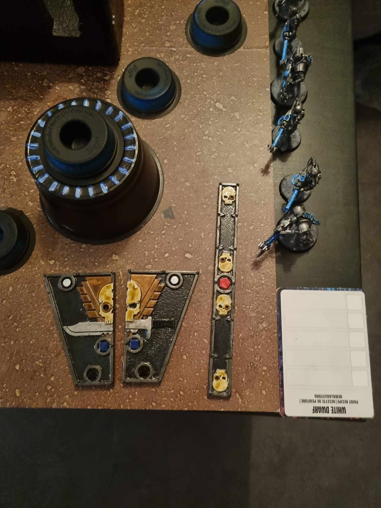

Miniatures / Warhammer 40K / Self-made Terrain Warhammer 40K / Hobby projects
Self-made Terrain My handmade terrain for Warhammer 40K. From textured grey walls and pillars to black and blue cylindrical pieces, these photographs show my handmade scenery and battlefield layouts.
The terrain in photographs Six views · Select a photo to enlarge

↗ Angled view of my self-made terrain, showing the raised walls and central pillars. 
↗ An overview of the terrain layout and its grey, textured surfaces. 
↗ A second overview of the terrain, with the walls and central area in shadow. 
↗ Two cylindrical terrain pieces with blue and silver details. ↗ A full battlefield layout with black and blue terrain and miniatures along the edges. 
↗ A close-up of cylindrical terrain, painted measuring tools and miniatures beside the battlefield. ×